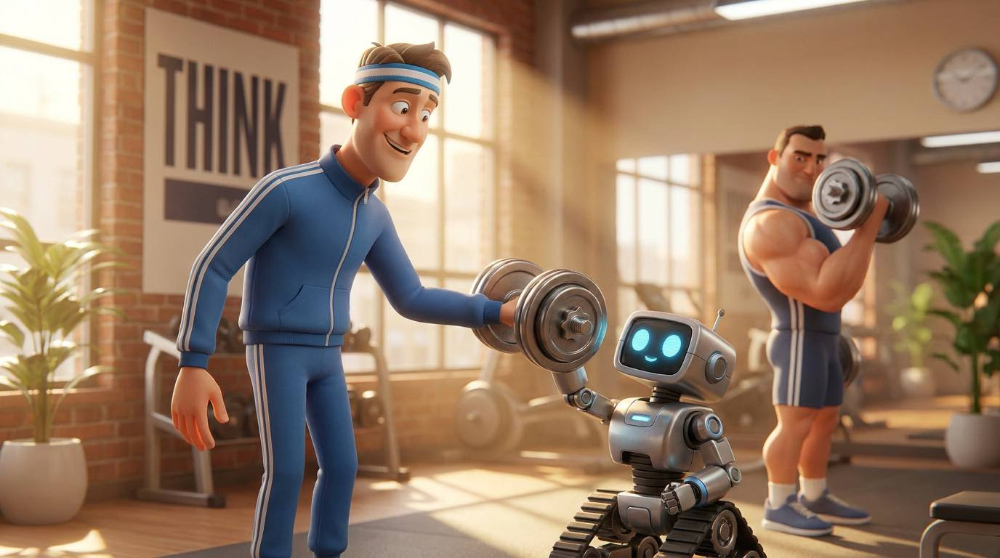

So it's been a while since we've covered AI…
A bunch of you have been sharing your cool AI projects with me.
- MT5 Dashboards to screen for some of the concepts covered in the Trading Teardown Series
- Trading Psychology coaches
- Building trade report templates
- Backtest results from specific strategies
And more…
All super cool to see.
But there's one thing I think we've all started to notice…
AI DOING ALL THE WORK

AI has many flaws.
We know it gets stuff wrong, sometimes pretty major stuff.
Which is fine, if we know and check.
But the biggest danger, I think, is this…
Outsourcing our thinking to AI.
I see a growing trend of people using it for decisions, and I think that's a mistake. (I've caught myself a few times opening ChatGPT instead of thinking through a problem properly.)
Why?
Our decision-making brain is like a muscle… don't use it and it withers away.
Then we're left with exactly the same decision-making process as everyone else on the planet. AI.
Which in trading equals no edge.
We are at the bleeding edge of this technology, and I can already see two types of users...
-
#1 Uses it for everything
I was at a coffee shop the other day and saw a woman asking ChatGPT, “Why was my husband so dismissive of a gift I gave him…”
Just f*cking speak to the guy yourself!
Maybe he just hit his daily circuit breaker on Nasdaq? 😁
-
#2 Uses it to amplify productivity and creativity
Instead of asking it for a solution, use it to help extract the best solution from your mind.
A brainstorming partner if you like…
Same with building things. AI is perfect for building things like dashboards, indicators, downloads (like the traders above who emailed me).
It's simply replacing labour; it's not thinking for you.
Now I don't claim to be an authority on this… who can be?
We're all in totally uncharted territory.
There will be positive and negative consequences with AI, just like we've seen with the internet and mobile revolutions.
But I do believe our job as traders is to embrace new technology where we can, but also be aware enough to know that the playing field is going to be elevated.
Everyone has access to it, and so to build an edge, that edge must come from our own mind.
The way we make good decisions, the way we handle emotions.
If we want to outperform for decades to come, we need to find that balance...
Borrow AI's power but keep our own.